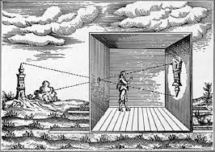

One of the things I thought was interesting was about bergers episode one was his discussion on how the camera
made art seem less mystical and thats why painting values were created since the constant reproduction of a
painting no longer makes it something people have to make plans to go see after hearing about it.This made me
think a lot about other things that make art values go up like for example when an artist dies a lot of the time
the value of their work will increase because the work they created can never be made again by them. With that
being said, it was interesting that a paintings ability to be reproduced and a paintings ability to not be
reproduced by its creator can make its value go up and that can go for any kind of art. I also thought his point
on the camera making things like religious pilgramiges almost meaningless because the images make them just
information now. Coming from a background where the religious pilgramige is incredibly important, a lot of
people in my community find that images like those make the pilgramige feel more accesbile and keep that
experience at the top of your mind as something to strive for and i've never considered that for others who
don't share my faith might just see these pictures as information about soemthing they will never see so that
definitly gave me a new perspective on those kinds of images.